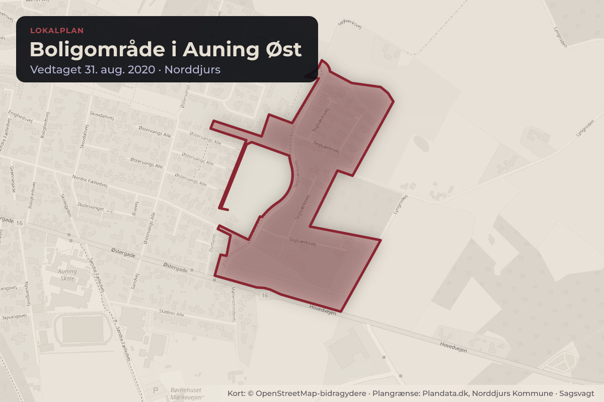
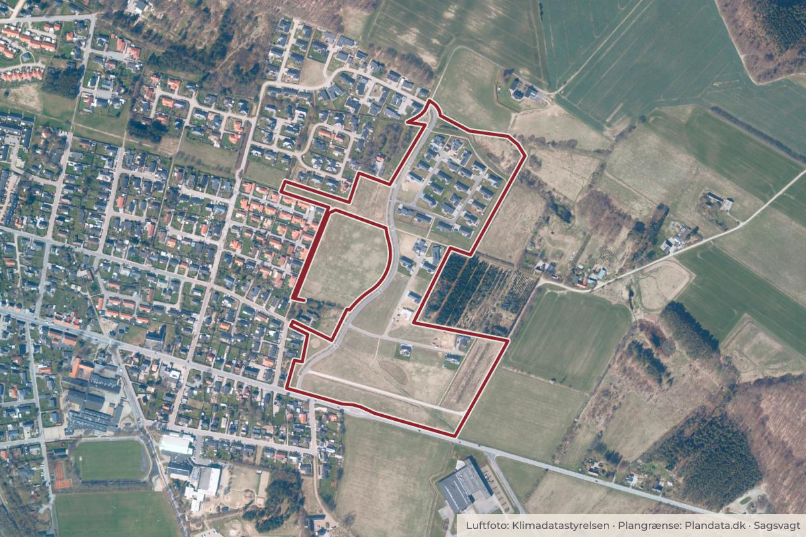

Besluttet 15. september, Kommunalbestyrelsen, Norddjurs
Endelig vedtagelse af Lokalplan 138-707 boligområde i Auning
Chefen for Plan, Byg og Miljø indstiller, at 1. ændringsforslaget fra lodsejer imødekommes og sendes i supplerende partshøring i 3 uger, herunder også tilretninger jf. den forventede reduktion af skovbyggelinjen.

Kort: © OpenStreetMap-bidragydere. Plangrænse: Plandata.dk, Norddjurs Kommune.

Har du et billede fra Boligområde i Auning Øst? Send det til os
Kort fortalt
- Hvem
- Kommunalbestyrelsen, Norddjurs Kommune
- Hvornår
- Tirsdag 15. september 2026
- Status
- Besluttet. Ad. 1. Godkendt.
Læs hele sagen Kommunens egen tekst
Sagsfremstilling
Forslag til Lokalplan 138-707 for et nyt boligområde i Auning blev vedtaget af
Kommunalbestyrelsen den 17. marts 2026 og har været fremlagt i offentlig høring i perioden fra
den 24. marts 2026 til den 24. april 2026.
Der er i den offentlige høring indkommet seks høringssvar, herunder et ændringsforslag fra lodsejer
der muliggør flere boliger.
Kommunalbestyrelsen bemyndigede ved vedtagelsen af lokalplanforslaget Natur-, Miljø- og
Teknikudvalget til at træffe beslutning om den endelige vedtagelse efter gennemført offentlig
høring. Idet lodsejer selv har indsendt et høringssvar, som - hvis det imødekommes - udløser en
partshøring, skal dette imidlertid godkendes i Kommunalbestyrelsen.
Der skal tages stilling til lokalplanens endelige vedtagelse og offentlige bekendtgørelse.
Lokalplanens indhold
Lokalplanen giver mulighed for realisering af et boligområde med en blanding af åben-lave og tætlave boliger i 1-2 etager. Formålet med lokalplanen er bl.a. at understøtte en naturlig afrunding af de
eksisterende boligområder mod skoven og samtidig sikre, at fremtidige boliger tilpasses de
landskabelige og naturmæssige kvaliteter omkring Porsbakkerne.
Lokalplanen fastlægger, at boligområdet skal vejbetjenes fra Reimersvej via den eksisterende
adgangsvej.
Lokalplanområdet ligger indenfor kommuneplanramme 1B.21, som udlægger området til
boligformål med mulighed for både åben-lav og tæt-lav bebyggelse, og lokalplanen er således i
overensstemmelse med kommuneplanen.
Med den endelige vedtagelse af lokalplanen vil området blive overført fra landzone til byzone.
Lokalplanforslaget, der har været i offentlig høring, er vedlagt.
Høringssvar
Der er i den offentlige høring indkommet seks høringssvar, herunder et ændringsforslag fra lodsejer
der muliggør flere boliger. Høringssvarene er vedlagt i forlængelse af høringsnotatet.
Bemærkningerne i fem af høringssvarene omhandler primært trafik og trafiksikkerhed,
stiforbindelser, støjgener i anlægsperioden, reduktion af skovbyggelinjen, bosætningsudvikling i
relation til naturområder, hensynet til bilag IV-arter (flagermus) samt adgangsforhold til
lokalplanområdet.
Hvad angår høringssvar, der omhandler vejadgang og trafiksikkerhed, vurderer forvaltningen, at
adgangsforholdene til projektområdet fra den offentlige vej Reimersvej skal tilpasses af hensyn til
trafiksikkerheden i krydset Reimersvej/projektområde. Der vil i den forbindelse komme en sag om
afholdelse af udgifterne til vejtilpasningen. Nye trafiksikkerhedsprojekter vil skulle indgå i puljen
til trafiksikkerhedsprojekter.
Forvaltningen vurderer jf. det vedlagte bemærkningsnotat, at de indkomne høringssvar ikke giver
anledning til ændringer af lokalplanens indhold.
Høringssvaret, som er indsendt af lodsejer, omhandler et ønske om udvidede muligheder for
opførelse af tæt-lav bebyggelse. Det ønskes, at der både i delområde I og II samt en mindre del af
delområde III med lokalplanen gives mulighed for tæt-lav eller åben-lav boligbebyggelse. I det
offentliggjorte lokalplanforslag er størstedelen af lokalplanområdet udlagt til åben-lav
boligbebyggelse (delområde I). Ændringen vil kunne medføre en forøgelse af antallet af boliger
inden for lokalplanområdet i forhold til det offentliggjorte lokalplanforslag.
Hvis lodsejers ønske imødekommes, skal ændringen sendes i en såkaldt supplerende partshøring på
tre uger blandt de berørte naboer og øvrige parter, som blev hørt i forbindelse med den offentlige
høring, herunder dem, der har indsendt høringssvar til det offentliggjorte forslag. Efter den
supplerende partshøring vil eventuelle høringssvar blive forelagt for Natur-, Miljø- og
Teknikudvalget i forbindelse med den endelige behandling.
Reduktion af skovbyggelinjen
Hele lokalplanområdet er omfattet af skovbyggelinje, hvor der som udgangspunkt ikke må placeres
bebyggelse eller etableres tilsvarende anlæg.
Forvaltningen har været i dialog med Styrelsen for Grøn Arealomlægning og Vandmiljø (SGAV),
som er myndighed på området, om en mulig reduktion af skovbyggelinjen inden for
lokalplanområdet. Det bemærkes, at Styrelsen først ved behandlingen af et vedtaget
lokalplanforslag har mulighed for at tage stilling til en konkret reduktion af en bygge- eller
beskyttelseslinje, da lokalplanens afgrænsning og indhold på dette tidspunkt foreligger
tilstrækkeligt afklaret. Styrelsen har på det foreliggende grundlag tilkendegivet at være indstillet på
at reducere skovbyggelinjen til 30 meter fra skovbrynet. En endelig afgørelse herom træffes dog
først i forbindelse med den endelige vedtagelse af lokalplanen.
En reduktion af skovbyggelinjen til 30 meter fra skovbrynet indebærer at dele af den bebyggelse,
som er vist i det offentliggjorte lokalplanforslag, ikke vil kunne realiseres, hvis den er placeret
inden for denne afstand. De offentliggjorte kortbilag afspejler derfor ikke længere den bebyggelse,
der forventes at kunne etableres.
Vedlagt er situationsplaner, hvor bebyggelsen er tilpasset Styrelsens forventede reduktion af
skovbyggelinjen, ligesom den ene situationsplan afspejler lodsejers ønske om udvidede muligheder
for opførelse af tæt-lav bebyggelse.
Vejledende tidsplan:
24. august 2026
Natur-, Miljø og Teknikudvalget - endelig
behandling af lokalplan. Hvis Natur-, Miljø og
Teknikudvalget beslutter at imødekomme lodsejers
ønske om udvidede muligheder for opførelse af tætlav bebyggelse, sendes sagen til behandling i
Økonomiudvalget og Kommunalbestyrelsen.
Kommunalbestyrelsen bemyndiger Natur-, Miljø- og
Teknikudvalget til at træffe beslutning om den
endelige vedtagelse efter gennemført partshøring.
Nedenstående tidsplan afspejler, at lodsejers ønske
imødekommes.
September
Behandling i Økonomiudvalget og
Kommunalbestyrelsen.
September / Oktober
Supplerende partshøring.
November / December 2026
Natur-, Miljø- og Teknikudvalget - endelig
behandling af lokalplan.
Sammenhæng til andre politikker/strategier og fagområder
Der er sammenhæng til Kommuneplan 2025.
Nye rammer i lokalplaner kan understøtte arbejdet med visionen.
Økonomiske konsekvenser
Ingen økonomiske konsekvenser.
Lovgrundlag
Planloven og Miljøvurderingsloven.
Indstilling
Chefen for Plan, Byg og Miljø indstiller, at
1. ændringsforslaget fra lodsejer imødekommes og sendes i supplerende partshøring i 3 uger,
herunder også tilretninger jf. den forventede reduktion af skovbyggelinjen.
Kommunalbestyrelsen bemyndiger Natur-, Miljø- og Teknikudvalget til at træffe beslutning
om den endelige vedtagelse efter gennemført partshøring.
Alternativt, at
2. ændringsforslaget fra lodsejer ikke imødekommes og det offentliggjorte lokalplanforslag
vedtages endeligt med tilretninger jf. den forventede reduktion af skovbyggelinjen.
Behandling i Natur-, Miljø- og Teknikudvalget 24. august 2026
Ad. 1. Tiltrådt.
Behandling i Økonomiudvalget 8. september 2026
Ad. 1. Tiltrådt.
Beslutning
Ad. 1. Godkendt.
Afbud: Allan Gjersbøl Jørgensen (A)
Bilag
Kilde: Norddjurs Kommune, Kommunalbestyrelsen, referat fra mødet tirsdag 15. september 2026, punkt 9. Læs den originale sag hos kommunen.